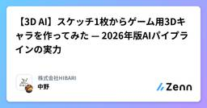

株式会社HIBARIのフィード
https://zenn.dev/p/hibari_inc
株式会社HIBARIは2024年11月に設立された沼津高専発AIスタートアップです。「”現場の抱える課題”をデジタルツイン×AIで解決する」ことをミッションに、日々活動しています。
フィード

【3D AI】スケッチ1枚からゲーム用3Dキャラを作ってみた — 2026年版AIパイプラインの実力
株式会社HIBARIのフィード
【3D AI】スケッチ1枚からゲーム用3Dキャラを作ってみた — 2026年版AIパイプラインの実力突然ですが、落書きみたいなスケッチからゲームで動く3Dキャラを作れたらいいのに、って思ったことないですか？自分は、ゲーム開発に手を出してみたいけどずっとそこで止まってたんですよね。で、最近の3D AI系ツールがだいぶ使い物になってきたらしいという噂を聞いて、実際に試してみました。結論から言うと、スケッチ1枚 → テクスチャ付き3Dモデル → リギング → アニメーション → ゲームエンジンで動く、ここまで到達できました。ただし「全部AIにおまかせ」とはいかなかった。 やり...
1日前

RAGの評価方法の実装&比較~失敗談を添えて~【RAGAS】【LLM-as-a-judge】
株式会社HIBARIのフィード
こんにちは！株式会社 HIBARI の河合と申します。今回はRAGの評価フレームワークである RAGAS と LLM-as-a-judge を実装し比較してみました。私は現在RAGシステムの開発を行っています。開発の中でRAGの精度を評価する必要があり、RAGASと呼ばれる評価フレームワークを使用したことがあります。その時、** この値って本当に信頼できるの？** と思ったことがありました。実装過程でいくつかのトラブルに遭遇したため、十分に比較検証ができなかった部分がありました。後半でその失敗談もまとめています。実装内容と検証できたことを中心にまとめてありますのでぜひご一読くだ...
10日前
Gemini APIで自作ペンプロッタにフィジカルAIを搭載してみた
株式会社HIBARIのフィード
Gemini APIで自作ペンプロッタにフィジカルAIを搭載してみたこんにちは。株式会社HIBARIの眞邉です。PCや家電など、何にでもAIが搭載される時代になりました。そこで本記事では、押し入れに眠っていた自作ペンプロッタにAIを搭載することに挑戦してみました。Gemini APIを利用してかんたんに実装することができましたので、フィジカルAI入門の実装例として是非ご一読ください。 背景昨年12月、初めて国際ロボット展(iREX)を観てきました。様々な種類のロボットがある中で、特にファナック・NVIDIAが展示をしていた自然言語で操作できるロボット、いわゆるフィジカル...
18日前
初心者でも簡単!! 見るだけでできる、Slackのタスク管理アプリの作り方
株式会社HIBARIのフィード
はじめに日々のSlackでのやり取りの中で、「これは後でやらないといけない」「タスクとして管理したい」と思いながら、そのまま流れてしまうことはないでしょうか。本記事では、「コピペだけでできる」をモットーに、ほぼすべてのコードをコピー＆ペーストするだけで作れる仕組みを紹介します。今回構築するのは、次のようなシンプルなタスク管理の流れです。Slackでタスクを登録するGoogleスプレッドシートに保存するPythonのデスクトップアプリで管理するWeb管理画面は使わず、Slack + Google Sheets + Pythonデスクトップアプリという構成で実...
1ヶ月前
Google LabsのFlowとは？Veoで映像を作るAIフィルムメイキングツールをざっくり解説
株式会社HIBARIのフィード
こんにちは！株式会社 HIBARI の中野です。Google Labs から公開されているFlowは、生成モデルVeoを使って「クリップ → シーン → 物語」へ組み上げていくことを意識した動画作成ツールです。Whisk や Opal のように “触って理解できる系” の Google Labs ですが、Flow は特に「動画生成を“単発ガチャ”で終わらせず、次のカットに繋げる」方向に振っているのが面白いところです。Flow: https://labs.google/fx/tools/flow Flowとは？Flow は Google Labs のツールの1つで、テキストや...
1ヶ月前
Claude Coworkを使ってみた：ブラウザ操作とファイル処理で広がる業務自動化の可能性
株式会社HIBARIのフィード
はじめにAnthropic社が提供するAIアシスタント「Claude」には、複数の提供形態(プロダクト)が存在します。本記事ではその中でも、コーディング支援に特化した「Claude Code」と、ファイル操作やブラウザ操作を含む幅広い業務を支援する「Claude Cowork」の2つに絞って紹介します。なお、本記事では以降、Claude Coworkを「Cowork」と呼びます。本記事では、実際にClaude Coworkを社内で試用した体験をもとに、特にChrome連携によるブラウザ操作とPDF操作を中心とした作業例をご紹介いたします。エンジニアの方だけでなく、非エンジニアの方...
2ヶ月前
OpalでAIミニアプリを爆速開発してみた
株式会社HIBARIのフィード
こんにちは！株式会社HIBARIの中野です。「アプリを作りたいけど、環境構築もコーディングも面倒くさい」「アイデアはあるけど、形にするまでの腰が重い」そんな全エンジニア、いや全人類の悩みを吹き飛ばすツールがGoogle Labsから登場しました。その名は「Opal(オパール)」。一言で言えば、「言葉(プロンプト)だけで、UI付きのAIミニアプリが一瞬で完成するツール」です。公式ブログでも「Describe, Create, and Share(記述し、作成し、共有する)」と謳われている通り、このツールは開発のハードルを極限まで下げてくれます。引用：Opal のご紹介: AI ...
2ヶ月前
【画像生成AI】Whiskとは？プロンプト不要の「混ぜる」画像生成AIを徹底レビュー
株式会社HIBARIのフィード
こんにちは！株式会社HIBARIの中野です。皆さんは画像生成AIを使用していますか？その中で以下のようなことを思ったことはありませんか？「欲しい画像に近づけるために、長いプロンプトを書くのが面倒...」「『プロンプトエンジニアリング』を頑張っているのに、なかなか思った通りの構図にならない...」そんな悩みを抱えている方に朗報です！Google Labsでひっそりと公開されている実験ツール「Whisk」が、これまでの画像生成の常識を覆そうとしています。今回は、「言葉」ではなく「画像」を組み合わせて新しい画像を錬成する、新感覚のツール「Whisk」をご紹介します。 Whis...
3ヶ月前
Transformerとは？仕組みと注意点を今更ながら解説！
株式会社HIBARIのフィード
こんにちは！株式会社 HIBARI の中野と申します。「LLM」という言葉が一般的になり、ChatGPTやClaude、Geminiなどのサービスを日常的に触る人も増えました。しかし、これらの根幹にあるTransformerについて、「なんとなく分かった」で済ませている方も多いのではないでしょうか。そこで、私自身の復習も兼ねて「Transformerとは何なのか」を、アテンション機構(Attention Mechanism)から整理していきます。 背景：RNN・CNNの限界まず初めに、Transformerが登場する前の話から始めます。Transformer登場以前、自然言...
4ヶ月前
LLMはどう文章を生成する？仕組みと注意点を今更ながら解説！
株式会社HIBARIのフィード
こんにちは！株式会社 HIBARI の中野と申します。日々LLMを扱っているものの、「そもそもLLMがどうやって文章を作っているのか」を体系的に説明できるようになりたい。そんな思いから、改めて仕組みを整理してみました。これからLLMに触れる方はもちろん、すでに業務で使っている方にも振り返りの材料になれば幸いです。 LLMの正体は予測マシンスマホで「今日は天気が」と打つと、「良い」「悪い」「微妙」といった候補(予測変換)が出てきますよね。LLMがやっていることを一言で表すなら、まさにこれです。LLMとは、「次に来る単語(トークン)をひたすら予測し続ける」ための、超巨大で高性能...
5ヶ月前
【論文紹介】1枚の画像から無限の長さの動画を生成するAI「StableAvatar」とは？
株式会社HIBARIのフィード
こんにちは！株式会社 HIBARI の中野と申します。今回は、一枚の画像と音声から、無限の長さのアバター動画を生成できると話題の論文「StableAvatar」の紹介します。この技術は、これまでの動画生成AIが抱えていた多くの課題を解決する可能性を秘めています。まずは、その課題から見ていきましょう。 これまでの動画生成技術の課題AIによる動画生成技術は日々進化しています。しかし「話すアバター」の動画を作る際には大きな課題がありました。 1. 時間が経つと顔が崩れる（一貫性の喪失）長い動画を生成しようとすると、フレームが進むにつれてAIが元の顔の特徴を忘れてしまいます。その...
7ヶ月前
Google AI Studio (Gemini) API と LangChain で、RAG を実装してみた
株式会社HIBARIのフィード
こんにちは！株式会社 HIBARI の中野と申します。今回は Google AI Studio の Gemini API と LangChain を活用して、独自のテキストデータに基づいた受け答えができる RAG システムを開発しましたので、その仕組みと動かし方についてご紹介します。このシステムを使えば、指定したディレクトリ内のテキストファイルをナレッジベースとして、AI がその内容を元に質問に回答してくれるようになります。RAG についてはこちらの記事を参照してください。https://zenn.dev/hibari_inc/articles/rag-overview シス...
7ヶ月前
Geminiを使ってずんだもんと会話してみた
株式会社HIBARIのフィード
こんにちは！株式会社 HIBARI の中野と申します。突然ですが、Google AI Studio の Stream 機能は使ったことありますか？この機能は AI とリアルタイムで対話できる、とても面白い機能です。ただ、AI の音声が google 側が用意したもの数種類しかなく、自由に変更できないのが少し残念な点でした。「それなら、自分の好きなキャラクターと話せるようにすればもっと面白いのでは？」なので今回は、ずんだもんとリアルタイムで会話できる簡単なシステムを開発してみました！▼ GitHub はこちら ▼https://github.com/nakano0328/real...
8ヶ月前
GitHub ActionsとPythonで、自動メール通知システムを実装してみた
株式会社HIBARIのフィード
こんにちは！株式会社 HIBARI の中野と申します。今回は、無料利用枠の範囲で使えるGitHub Actionsと Pythonを用いてサーバシステムの構築をテストしてみました。※2025/12/12 追記本記事で紹介している手法について、GitHub Actionsの利用規約や実行タイミングに関する重要な注意点があります。記事末尾の免責事項を必ずご一読ください。 今回作ったもの今回作ったシステムの構成は、とてもシンプルです。GitHub Actionsのscheduleトリガーを利用して、イベントを発火させます。リポジトリに置いたPython スクリプトが実行され...
8ヶ月前
RAG（検索拡張生成）とは？仕組みからメリット、活用例までやさしく解説
株式会社HIBARIのフィード
初めまして！株式会社 HIBARI の中野と申します。これからの取り組みとしてテックブログを書き始めることにしました。よろしくお願いします！ RAG とは？RAG(Retrieval-Augmented Generation)は日本語では「検索拡張生成」などと言われています。大規模言語モデル(LLM)の持つ文章生成能力と、外部の知識を検索する能力を組み合わせた技術です。 なぜ RAG が必要なのかLLM 単体では特定のドメインに特化した情報を回答することができません。例えば社内会議の情報や会社独自の知識などを答えることができません。LLM 自体が学んでいないことを回答しようと...
8ヶ月前